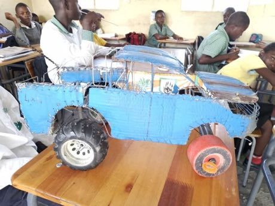

Home / Living Traditions / Shared across the world
Playable heritage gameWire car
Also known as Galimoto (Chichewa) · wire-car · street-made toy car
Children in southern and eastern Africa bend scrap wire into toy cars, often with wheels cut from tin lids or bottle tops and a long steering stick, then push them along dusty streets. Each car is invented, with its own bonnet, boot and roof.


How to play
- The framed picture shows the finished car; the dashed gold line in the work area is the outline to reach.
- Drag the white points to bend the body wire and the long steering rod into place.
- Drag each wheel by its rim and set it under the body.
- Press Check to see how close the wire is to the outline.
Rules at a glance
- Each wire keeps its points in order; Undo takes back the last drag.
- The score measures how far your wire lies from the outline at its worst place, not only at the corners.
- Three stars need the body, the rod and both wheels nearly on the outline.
About the tradition
Children make galimoto and similar wire cars in Malawi and in other African countries from scrap such as telephone wire, packing wire and bottle tops. The skill of bending and binding wire passes from older to younger children, and cars are built for play and sometimes for sale.
Origins
A living tradition passed from person to person; it is not tied to a single dated origin.
Credits
- Craft model: World Heritage Games (original)
- Photo: Gwasheya, CC0, source on Wikimedia Commons
- Text: CC BY-SA 4.0, World Heritage Games.
Sources

Get the app
Wire car is one of 8 craft designs in the Craft Designs of the World app for iPhone, iPad and Android. Submitted to the App Store and Google Play; in review. Store links appear here the day it goes live. One app, many traditions, no account needed.
More games to play


Ndebele geometric wall painting
South Africa · Crafts and makingPlay preview · in the Paper & Paint of the World app